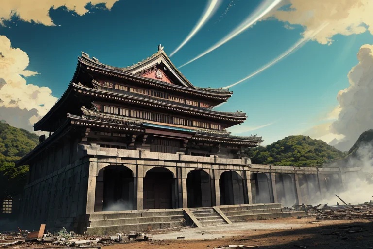
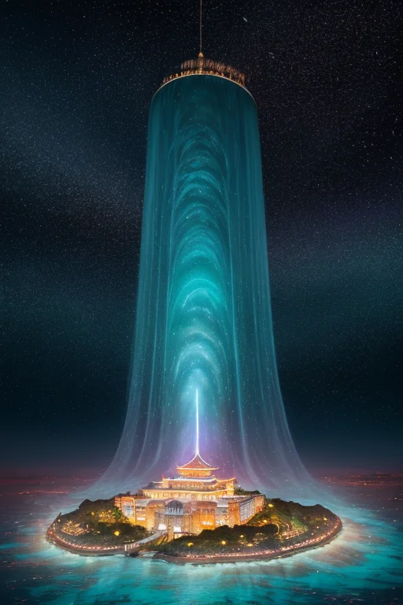

第一章 現実の沖縄
あなたはまだ気づいていない。この土地にも、王がいることを。
首里城の正殿は、2019年の火災から再建途上にある。赤瓦と龍柱の影が、午後の強い日差しに刻まれ、焼失と再生を繰り返すこの場所の記憶を無言で物語っていた。観光客のざわめきを背に、一人の女性が石畳に佇んでいる。優雅なシルエットは、どこかこの喧騒とは次元の違う深みをたたえていた。彼女こそ、この地に遣わされた王、リュウキュリア・エコーである。
彼女の目には、今の首里城の向こうに、1879年に琉球王国が滅び、日本の県となったその朝の霞が重なって見える。そして1945年、鉄の雨に焼かれた城跡の焦げ臭さが、今も鼻腔をくすぐる。彼女は「歪み」を調整するためにここにいる。だが、歴史の大きな断絶そのものを消すことはできない。彼女が調整できるのは、ほんのわずかな「ずれ」だけだ。地震の波が伝わる速度を百分の一秒遅らせ、台風の眼が通る経路を数キロずらす。それだけが、彼女に許された介入だ。
「あなたは何を受け継ぐ？」という問いが、灼熱の風に乗って、彼女の心の奥底に響く。

第二章 歪みの兆候
首里城の再建された朱の御殿は、観光客のざわめきに包まれていた。しかしリュウキュリア・エコーの耳には、別の音が響く。それは、この場所に幾重にも折り重なった「境界」の軋みだ。琉球王国が消え、戦火に焼かれ、そして復元された。そのたびに生じた歴史の断層が、地殻のプレートとは別種の「歪み」を生み出していた。
彼女の傍らで、妖精エコラが優雅に手を振るう。観測データが示すのは、沖縄本島近海のプレート境界に蓄積される、尋常ではないエネルギーの影。それは単なる地学的な力ではない。積もり積もった記憶の重みが、物理的な圧力に転化しようとしている兆候だった。
「歪みは、過去の叫びが形を変えたもの」とエコラが囁く。リュウキュリアは目を閉じ、掌をかざす。彼女の仕事は、この巨大なエネルギーの解放を止めることではない。爆発的な解放が起きるその一瞬前に、ほんの少し、そのベクトルをずらすことだ。被害をなくすのではなく、向きを変える。歴史そのものを消せないのと同じように。
国際通りの喧噪の下を、かつて鉄の暴風が吹き抜けた痕跡が、今も微かに脈打っている。
第三章 王の葛藤
首里城正殿の再建現場。新しい木材の香りと、焼け焦げた古材の匂いが混ざり合う。リュウキュリアは、その境界に立つ。彼女の掌下で、歪みの波は激しく渦巻く。これは単なる地殻のひずみではない。失われた王国の記憶、鉄の雨に焼かれた島の悲鳴、そして今、新たに塗り重ねられようとする歴史の軋み。全てが複雑に絡み合い、巨大なエネルギーとなって蓄積されていた。
「王よ、この歪みを鎮めるべきか、それとも…解放させるべきか」
エコラの声は、三線の糸が切れるような音だった。歪みを調整し、破壊を最小限に抑える。それが王の使命だ。しかし、この歪みの核にあるのは、長く封じ込められ、歪められてきた「真実」そのものの圧力だった。鎮めれば、また歴史は沈黙する。解放すれば、どれほどの傷が新たに生まれるか。
リュウキュリアは、斎場御嶽の岩陰に刻まれた無数の祈りを思い出す。彼女は感情を持たないはずの王だった。だが、この島の記憶の密度は、彼女に「哀愁」という感情を植え付けた。使命か、共感か。彼女は自問する。あなたは何を受け継ぐ？ 静かな均衡か、それとも真実の痛みを伴う変革か。
彼女は、碧と紫の紋章を煌めかせた。決断の時だった。
第四章 妖精との対話
斎場御嶽の聖なる空間に、二つの波が立った。一つは優雅な碧、主席妖精エコラ。もう一つは深い紫、地域特化妖精ウタキナ。彼女たちは王の前に現れ、静かに語り始めた。
「境界を守るとは、記憶を封じることでもあるのです」とエコラは言う。彼女の声は、台風の波を分散させる時のように、穏やかで確かだった。「歪みを調整し、均衡を保つ。それが我々の使命。しかし、この島の記憶はあまりに重い。琉球王国の滅亡、沖縄戦……封印された痛みは、新たな歪みを生みます」
ウタキナが御嶽の岩を撫でた。「聖域の波は、真実を伝えるためにあります。変革は痛みを伴い、新たな亀裂を生むかもしれません。しかし、受け継がれるべきは、静かなる忘却でしょうか。それとも、たとえ痛くとも、真実の記憶そのものでしょうか」
リュウキュリアは目を閉じた。三線の音色、泡盛の香り、ちんすこうの甘さ。それらはすべて、記憶の継承の形だった。彼女は問われている。あなたは何を受け継ぐ？ 無事という名の静寂か、それとも真実という名の激動か。
妖精たちは王の決断を、碧と紫の光の中に待った。
第五章 微調整と余韻
首里城の再建現場で、リュウキュリアは決断した。彼女は、歴史の流れを一度だけ曲げる力を行使する。それは、沖縄戦の最中、ある一瞬の出来事だ。砲撃が迫る御嶽で、一人の巫女が守ろうとした古い歌謡集。彼女は死を覚悟し、それを石の隙間に隠した。リュウキュリアは、その本がほんの数センチ、より深く、より安全な岩陰に「滑り込む」よう、境界を微調整する。代償は、彼女自身の「記憶」の一部。彼女がこの島で感じてきた、最も愛おしい三線の音色の記憶が、色を失い、静寂に変わる。
本は戦火をくぐり抜け、数十年後、修復作業員によって発見される。そこに記された歌は、失われかけていた祭祀の形を現代に伝える貴重な手がかりとなった。リュウキュリアは、国際通りの喧噪の中、かつては鮮明だった音の記憶が抜け落ちた空白を感じながら佇つ。彼女が受け継いだのは、静寂でも激動でもない。受け継ぐという行為そのものの、重く、そして確かな手触りだった。
あなたの町にも、王がいる。